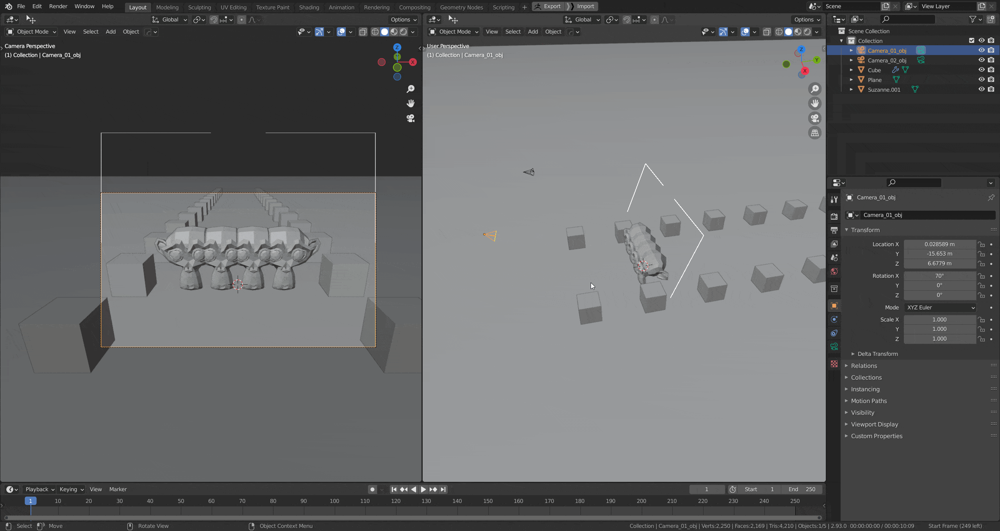

Release Notes
Simple Camera Manager v1.7.0
This update brings per-camera Dolly Zoom controls, a new passepartout overlay, camera list sorting and filtering, focal length and resolution presets, several bug fixes, and full Blender 5.1 support.
Features & Improvements
- #112: Dolly Zoom gizmo visibility and focus distance linkage are now stored per camera instead of as a global preference.
- #122: Added focal length and resolution preset selectors to the pie menu and N-Panel.
- #130: Exposed camera popup window size as a user preference.
- #137: Improved Camera from View operator — automatically assigns a free render slot and is now accessible directly from the N-Panel.
- #139: Fixed camera list sorting having no effect.
- #140: Added Visible Only and Render Selected filter toggles to the camera list.
- #141: Added sort modes to the camera list: Active First, Collection, Focal Length, Render Slot, Resolution, Background Image.
- #142: Added passepartout overlay that tints the camera frame blue for locked cameras and red for viewport-linked cameras.
- #143: Exposed passepartout overlay colors for locked and linked cameras in preferences.
- #144: Next/previous camera cycling now follows alphabetical order, matching the camera list.
- #145: Added Reload Addon button to the N-Panel.
- #148: Added update checker — the addon now notifies when a new version is available.
Bug Fixes
- #126: Fixed add-on keybindings not working on Linux.
- #131: Fixed crash when cycling to a camera that is in a disabled collection.
- #136: Removed duplicated background overlay settings from the pie menu's middle column.
- #138: Fixed Dolly Zoom gizmo not respecting the camera aspect ratio.
- #147: Fixed reverse sort having no effect in the camera list.
Simple Camera Manager v1.6.3
This is a hotfix release improving keymap reliability.
Bug Fixes
- Fixed keybindings being unreliable by switching keymap registration to use the active keyconfig instead of the addon keyconfig.
Simple Camera Manager v1.6.2
This update fixes broken keymaps, cleans up preferences, and improves the resolution overwrite workflow.
Features & Improvements
- #118: Cleaned up the Support tab in preferences — improved layout, added a Discord link, and reorganized cross-promotion links.
- Added a
Resolution Overwritetoggle per camera — the scene resolution is only applied when explicitly enabled, preventing unwanted resolution changes when switching cameras. - Exposed the resolution overwrite toggle in the camera list and pie menu.
Bug Fixes
- #117: Fixed broken keymap caused by incorrect module import order in
__init__.py. - #119: Fixed error on add-on unregister caused by attempting to delete a non-existent scene property.
Simple Camera Manager v1.6.1
This is a hotfix release.
Bug Fixes
- Fixed broken Gumroad links in the preferences Support tab.
Simple Camera Manager v1.6.0
This update focuses on enhancing user experience and adding powerful features.
Key Updates
- A major overhaul makes the app more intuitive and user-friendly.
- Render multiple cameras at once for faster workflows.
- Easily select, filter, and manage cameras with new options like "Select All" and "Select None."
Features & Improvements
- Render Multiple Cameras — Streamline your rendering process.
- Fixed Filters — Ensured filters work correctly.
- N-Panel Popup — Quick access to settings with a new button.
- Cross Promotion Links — Discover related tools easily.
- N-Panel Integration — Moved scene functionalities to N-Panel.
- Pie Menu Options — Added visibility options like wireframe.
- New Camera from View — Quickly add cameras from your current view.
Thanks for your support! Enjoy the new features in Simple Camera Manager 1.6.0.
Simple Camera Manager v1.0
Rebranding to Simple Camera Manager.
Features & Improvements
- Converted to Extension (Blender 4.2+) — Now integrates as an extension for Blender 4.2 and beyond.
- UI Improvements — Improved layout for better usability.
Bug Fixes
- Camera Scene Panel — No longer forced on top.
- Unregister Warning — Removed unnecessary warnings.
- Preferences Operator — Fixed the 'Open Preferences' operator for consistent access to settings.
Simple Camera Manager v1.2
Support for Blender 4.0 and keymap improvements.
Features & Improvements
- Blender 4.0 Support.
- UI Improvements.
- New Keymap UI.
Bug Fixes
- Custom Hotkeys.
Simple Camera Manager v1.1.1
Features & Improvements
- Blender 3.1 Support.
- #81: Gizmos can be hidden when not used.
Bug Fixes
- #80: Gizmo can't be selected by the user in 3.1.
Simple Camera Manager v1.1.0
Features & Improvements
- Dolly-Zoom operator with Viewport Gizmo.
- Blender 3.0 Support.
- Use camera name for saving renders.

The Dolly Zoom is the big feature of this release. It is not only a powerful tool in itself, it's also the first tool using a viewport Gizmo, paving the way for future, user-friendly and powerful tools in the addon.
Bug Fixes
- #57: The exposure of 0.00 is ignored when switching between cameras.
Simple Camera Manager v1.0.0
Initial Release